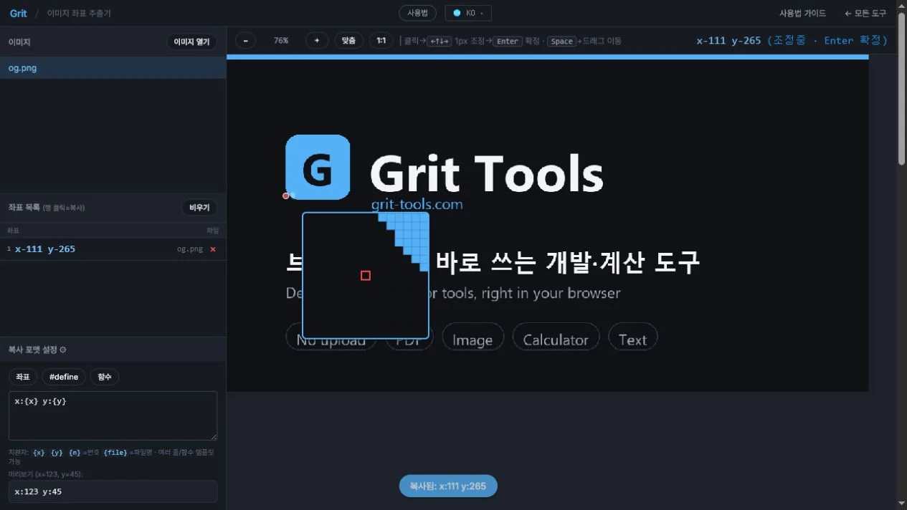
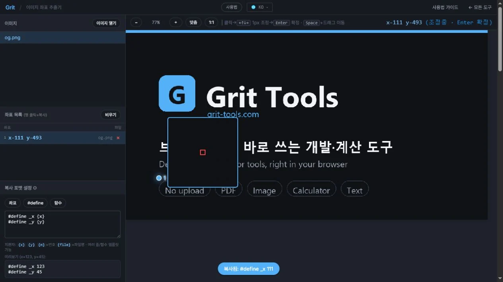
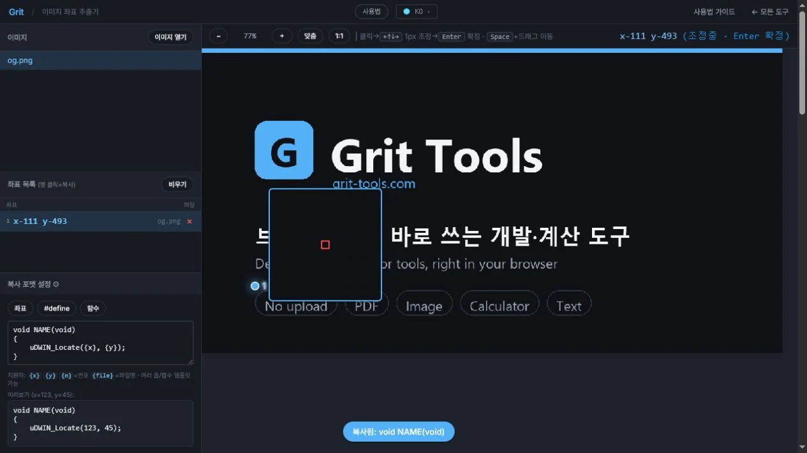
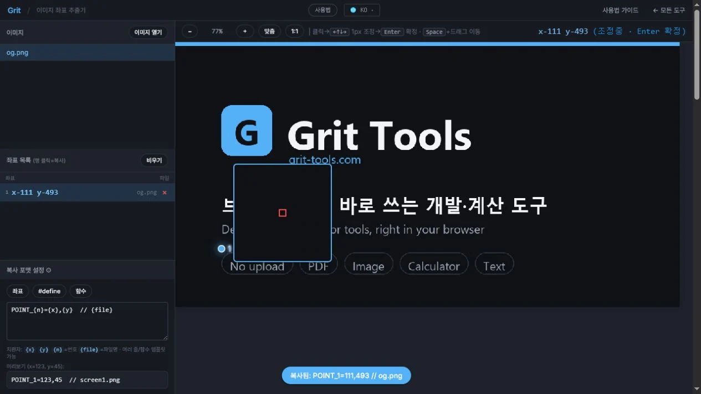

이미지 픽셀 좌표 추출하는 방법 (x, y)
HMI, 임베디드 UI, 터치스크린 인터페이스 개발 시 이미지의 특정 지점이 정확히 몇 픽셀 위치인지 파악해야 할 때가 많습니다. 이미지를 측정 도구 없이 눈대중으로 추측하거나, Photoshop을 매번 열기엔 번거롭습니다. 이 글에서는 이미지를 브라우저에 끌어놓고 클릭만 해도 픽셀 좌표(x, y)를 즉시 추출하는 방법을 정리합니다. 이미지는 서버로 전송되지 않습니다.
이런 분께 필요해요
- HMI 또는 임베디드 UI 화면 레이아웃의 버튼·요소 좌표를 코드에 입력해야 할 때
- 디자인 시안에서 특정 위치의 픽셀 좌표를 빠르게 뽑아야 할 때
- 터치 좌표, 클릭 영역 정의를 위해 이미지 기준 x·y 위치를 확인할 때
- Photoshop 없이 브라우저에서 바로 좌표를 읽고 싶을 때
픽셀 좌표 추출하는 단계
- 이미지 열기좌표를 추출할 이미지를 화면에 드래그&드롭하거나 선택해 불러옵니다. 이미지는 서버로 전송되지 않으며, 브라우저 안에서만 처리됩니다.
- 클릭으로 좌표 찍기이미지 위 원하는 위치를 클릭하면 해당 픽셀의
x,y좌표가 즉시 표시됩니다. 여러 점을 순서대로 찍어 목록으로 쌓을 수 있습니다. - 방향키로 미세 조정1px 단위 정밀 조정이 필요할 때는 키보드 방향키로 좌표를 조금씩 이동합니다. 세밀한 위치 지정이 가능합니다.
- 원하는 포맷으로 복사좌표값,
#define매크로, 함수 호출 형태 중 코드에 바로 붙여넣기 좋은 포맷을 선택해 복사합니다.
코드 포맷이란
임베디드 C, MCU 펌웨어, HMI 소프트웨어 개발에서는 좌표를 코드에 직접 넣는 경우가 많습니다. 복사 포맷을 미리 선택해 두면 추출한 좌표를 별도 가공 없이 곧바로 붙여넣을 수 있습니다.
- 좌표값 —
120, 45형태의 단순 숫자 쌍 - #define 매크로 —
#define BTN_OK_X 120/#define BTN_OK_Y 45 - 함수 호출 —
draw_button(120, 45)같은 함수 인자 형태
좌표 기준과 정밀도
좌표 기준점은 이미지의 좌상단 (0, 0)입니다. x는 오른쪽, y는 아래쪽으로 증가합니다. 이미지를 확대한 상태에서 클릭해도 원본 이미지 크기 기준의 실제 픽셀 좌표가 계산되므로 정밀도가 유지됩니다.
자주 묻는 질문
좌표 기준점은 어디인가요?
이미지의 좌상단 모서리가 (0, 0)입니다. x는 오른쪽으로, y는 아래쪽으로 커집니다. HMI·임베디드 UI 개발에서 일반적으로 쓰는 기준입니다.
여러 점을 한 번에 찍을 수 있나요?
네. 클릭할 때마다 좌표가 목록에 쌓입니다. 여러 UI 요소의 위치를 순서대로 찍어 한꺼번에 복사할 수 있습니다.
#define, 함수 포맷이란 무엇인가요?
임베디드 C 코드에서 자주 쓰는 형태로 좌표를 바로 복사할 수 있습니다. #define BTN_X 120 형태의 매크로나 draw_button(120, 45) 같은 함수 호출 형태로 내보낼 수 있습니다.
이미지가 서버로 업로드되나요?
아니요. 이미지는 서버로 전송되지 않습니다. 모든 처리가 브라우저 안에서 이뤄지므로 업무 자료나 미공개 디자인 파일도 안심하고 사용할 수 있습니다.
이미지를 확대해서 정밀하게 찍을 수 있나요?
네. 도구 안에서 이미지를 확대·축소할 수 있으며, 확대 후 클릭해도 원본 이미지 기준 실제 픽셀 좌표가 정확하게 표시됩니다. 방향키로 1px 단위 미세 조정도 가능합니다.
색 경계 픽셀의 좌표 찾기

123- 이미지를 열고 서로 다른 색이 맞닿는 경계로 커서를 이동합니다.
- 루페 중앙 십자선과 픽셀 격자를 보며 방향키로 1px씩 조정합니다.
- Enter로 확정한 x·y 좌표가 왼쪽 목록에 기록됐는지 확인합니다.
복사 포맷 선택과 사용자 템플릿
좌표를 확정한 뒤에는 왼쪽 복사 포맷 설정에서 출력 형태를 정합니다. 포맷을 선택하거나 직접 작성한 다음 좌표 목록의 행을 클릭하면 치환이 끝난 문자열이 클립보드에 복사됩니다.

123- 1
#define프리셋 선택 - 2템플릿과 미리보기 확인
- 3좌표 행을 클릭해 완성된 매크로 복사

123- 1함수 프리셋 선택
- 2함수 이름·본문과 좌표 치환 위치 편집
- 3복사 완료 메시지 확인

123- 1치환자를 조합해 사용자 포맷 작성
- 2미리보기에서 실제 결과 확인
- 3좌표 행 클릭 후 클립보드 복사 결과 확인
사용할 수 있는 치환자
{x}— 선택한 지점의 가로 좌표{y}— 선택한 지점의 세로 좌표{n}— 좌표 목록의 순번{file}— 좌표를 찍은 원본 파일명
한 줄뿐 아니라 여러 줄 템플릿도 가능합니다. 예를 들어 click({x}, {y});, {file}: [{x}, {y}], CSS용 left:{x}px; top:{y}px;처럼 작업에 맞는 형식을 만들어 둘 수 있습니다. 작성한 템플릿은 브라우저에 저장되어 다음 방문에도 유지됩니다.